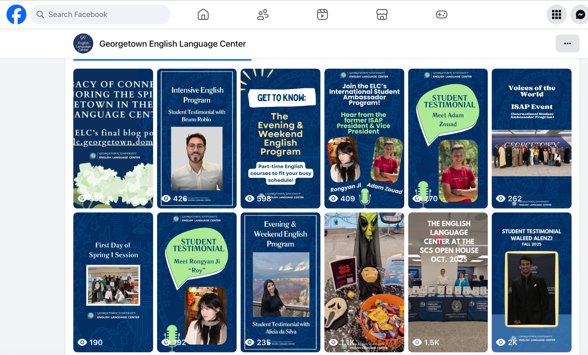

Rongyan Ji
International Student
Ambassador Program
Georgetown English Language Center · Facebook
Hear from the former President and Vice President of the International Student Ambassador Program (ISAP).
Every session we invite students in our Intensive English Programs to participate in ISAP. Through this program, students develop a deeper connection with their peers and engage in intercultural collaboration.
Watch the conversation on Facebook